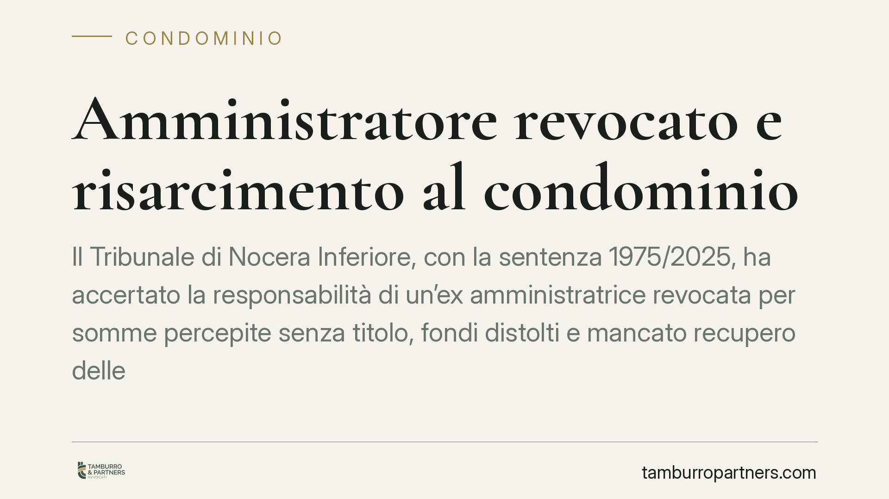

Amministratore revocato e risarcimento al condominio
Il Tribunale di Nocera Inferiore, con la sentenza 1975/2025, ha accertato la responsabilità di un'ex amministratrice revocata per somme percepite senza titolo, fondi distolti e mancato recupero delle morosità. La pronuncia chiarisce i limiti del mandato dell'amministratore e conferma che, in questi casi, la mediazione non è un passaggio obbligato prima della causa.

Il caso
Un condominio ha agito in giudizio contro la propria ex amministratrice, revocata dall'incarico, chiedendone la condanna al risarcimento. Tre le contestazioni principali: somme incassate senza alcun titolo giustificativo, fondi condominiali distolti dalla loro destinazione e omesso recupero dei crediti verso i condomini morosi.
Il Tribunale di Nocera Inferiore (sentenza 1975/2025, dell'11 giugno 2025) ha ritenuto fondate le domande, affermando la responsabilità dell'ex amministratrice e rinviando a una fase successiva la quantificazione esatta del danno.
Inquadramento normativo
Il rapporto tra amministratore e condominio è un mandato. Si applica quindi l'art. 1710 del codice civile, che impone al mandatario di eseguire l'incarico con la diligenza del buon padre di famiglia. Chi gestisce denaro altrui deve rendere conto di ogni movimento e restituire quanto non spettante.
Tre profili fondano la responsabilità. Le somme percepite senza titolo configurano un prelievo privo di giustificazione contabile. I fondi distolti rappresentano un uso del denaro condominiale per scopi diversi da quelli deliberati. L'omesso recupero delle morosità integra invece una condotta omissiva: l'amministratore che non attiva le procedure di riscossione viene meno a un obbligo preciso del suo incarico.
Sul piano processuale, il Tribunale ha escluso l'obbligo di mediazione previsto dall'art. 5 del D.Lgs. 28/2010. La materia condominiale vi rientra, ma qui la controversia riguarda la responsabilità del mandatario verso il mandante: non una lite tra condomini o sulla gestione, bensì un'azione di danni contro chi ha amministrato male. Per questa ragione il tentativo di conciliazione non è stato richiesto come condizione di procedibilità.
Infine, per la stima del danno il giudice ha richiamato l'art. 1226 del codice civile, che consente la valutazione equitativa quando l'importo preciso non è determinabile con esattezza. La quantificazione è stata rinviata, ma il principio di responsabilità è ormai fissato.
Implicazioni pratiche
La decisione conferma un principio spesso sottovalutato: la revoca non chiude i conti con l'amministratore. Al contrario, è proprio al momento del passaggio di consegne che emergono le irregolarità gestionali.
Per il condominio questo significa che esistono strumenti concreti per recuperare somme indebitamente trattenute o danni derivanti da una gestione negligente. Non basta sostituire l'amministratore: occorre verificare la contabilità pregressa e valutare se sussistano i presupposti di un'azione di responsabilità.
Il punto sulla mediazione è altrettanto rilevante. Chi vuole agire contro l'ex amministratore non deve necessariamente passare dal procedimento di mediazione, con un risparmio di tempo. Resta però essenziale inquadrare correttamente la domanda, perché una qualificazione errata può esporre al rischio di improcedibilità.
Per l'amministratore in carica, la pronuncia è un monito. La diligenza richiesta non è formale: ogni movimento di cassa deve essere documentato e ogni morosità va perseguita tempestivamente. L'inerzia nel recupero crediti può tradursi in responsabilità personale.
Cosa fare in concreto
- Richiedete il passaggio di consegne completo. Alla revoca, pretendete dall'ex amministratore tutta la documentazione contabile, i saldi bancari e il registro di anagrafe condominiale.
- Fate verificare la contabilità pregressa. Un controllo tecnico sui movimenti consente di individuare somme prelevate senza titolo o fondi usati impropriamente.
- Deliberate l'azione in assemblea. L'azione di responsabilità contro l'ex amministratore va autorizzata con delibera: predisponete il mandato al nuovo amministratore o a un legale.
- Non trascurate le morosità pendenti. Documentate quali crediti non sono stati recuperati e in quali tempi: l'omissione può rientrare tra i danni risarcibili.
- Agite senza ritardi. Più passa il tempo, più diventa difficile ricostruire la gestione e dimostrare il nesso tra condotta e danno.
---
*Contributo informativo a cura di Tamburro & Partners - Avv. Giuseppe Tamburro. Non costituisce parere legale.*
Ogni condominio ha una storia a sé.
Se gestisci un'amministrazione e vuoi un confronto su una specifica questione condominiale, scrivi allo studio. Ti rispondiamo entro un giorno lavorativo.